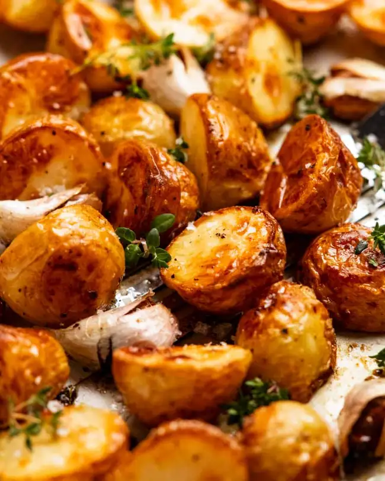

The Best Roast Potatos

Description
These roast potatos are crunchy, golden and bound to wow any of your dinner guests.
For best results, prep the day before cooking.
Serves 6 people comfortably
30 mins to prep, 1 hr to cook
Ingredients
- 1kg of baby potatos
- 4tbsp extra virgin olive oil
- 1tsp cooking salt
- 1/4tsp black pepper
- 5 garlic cloves, peeled
- 5 sprigs of thyme, or 3 spigs of rosemary
- finely chipped fresh parsley or thyme to garnish
Method
- Preheat oven to 200°C / 400°F (180°C fan)
- Par boil new potatos in salted water for 10 to 15 minutes
- Heat olive oil in pan, in the oven until hot
- Toss potatos, garlic and herbs into hot oil
- Cook for 20 minutes, check and turn the potatos
- Cook undisturbed for the remaining 40 minutes, or until the desired colour
- Serve with fresh herb of your choice and enjoy